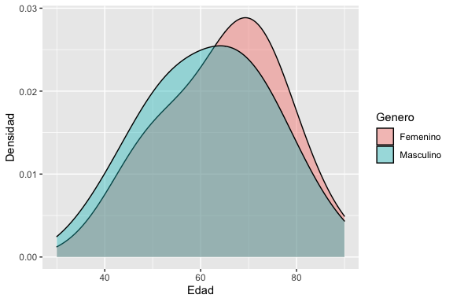
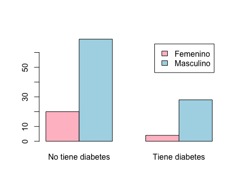
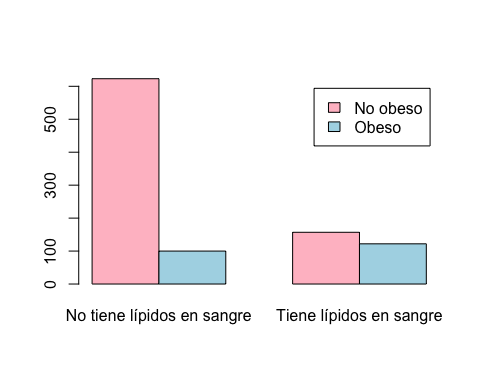
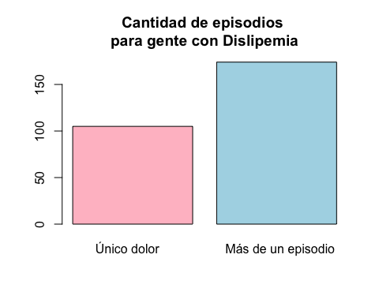

Introducción
Hemos realizado un análisis de la prevalencia de los factores de riesgo como elementos esenciales para la decisión sobre tipo de tratamiento hospitalario de los eventos cardiovasculares.
Utilizamos como base para este análisis un dataset conteniendo los datos ya curados de internación de 1000 pacientes del Hospital Universitario Austral.
Nuestro estudio se divide en dos partes; la primera partiendo de los pacientes que sufrieron un evento cardiovascular, y la segunda parte considera a todos los pacientes admitidos a la guardia.
Análisis
Pacientes que sufrieron un evento cardiovascular
Un evento cardíaco se refiere a todo tipo de eventos coronarios de diversas etiologías. Todos los pacientes que tuvieron eventos coronarios tienen una edad superior a los 30 años. De los 121 pacientes que sufrieron un evento cardíaco 97 son hombres y 24 son mujeres.
| Evento | Cantidad |
|---|---|
| 0 | 881 |
| 1 | 121 |
Edades y Género

El gráfico representa la densidad de pacientes de cada edad, separados por genero, que presentan un evento cardíaco. El intervalo de edad con mayor cantidad de pacientes internados para ambos géneros se presenta entre los 65 y 70 años.
Diabetes y Género

El gráfico separa unitariamente la cantidad de mujeres y hombres con diabetes, y cantidad de hombres y mujeres sin diabetes que sufrieron un evento cardíaco. Podemos observar que de los pacientes con diabetes, pocas mujeres sufrieron este evento. Por contrario, de los hombres con evento podemos notar que una porción más grande sufre de diabetes.
Antecedentes Familiares y Cantidad de Episodios
Pudimos deducir que de los pacientes que presenciaron uno o más eventos cardiovasculares, solo una pequeña cantidad de ellos tenían antecedentes familiares. Consecuentemente, podemos asumir en base a los datos que se nos entregaron, que los antecedentes familiares pueden no ser considerado un factor de riesgo significativo para el paciente.
Características y Ubicación del Dolor
Los siguientes gráficos separan el tipo de dolor y en cuántos lugares del cuerpo este se presentó.
Dolor de puntada, quemazón o acidez
Podemos notar que la mayoría de los pacientes sufrieron dolor opresivo en uno o más lugares del cuerpo. Otra cantidad significante de pacientes sufrió un dolor de puntada, quemazón o acidez. Una cantidad menor de pacientes sufrió otro tipo de dolor.
Dolor Opresivo
Podemos notar que la mayoría de los pacientes sufrieron dolor opresivo en uno o más lugares del cuerpo. Otra cantidad significante de pacientes sufrió un dolor de puntada, quemazón o acidez. Una cantidad menor de pacientes sufrió otro tipo de dolor.
Otro dolor
Podemos notar que la mayoría de los pacientes sufrieron dolor opresivo en uno o más lugares del cuerpo. Otra cantidad significante de pacientes sufrió un dolor de puntada, quemazón o acidez. Una cantidad menor de pacientes sufrió otro tipo de dolor.
Pacientes atendidos en la guardia con posible evento cardiovascular
Ingresaron 1000 pacientes en la guardia del Hospital Austral con sospecha de un posible evento cardíaco. A estos se les pidió información sobre sus habitos, salud y antecedentes familiares.
Duración del Dolor y Evento
De los pacientes que tuvieron un dolor que se extendió temporalmente menos de un minuto, casi ninguno de ellos sufrió un evento cardiovascular. Cuando el dolor persiste por más de un minuto el riesgo de tener un evento incrementa de forma significativa. Comparando los pacientes con dolor mayor a 20 minutos que no sufrieron un evento cardiovascular con los que sufrieron el evento, notamos que gran parte de estos no sufren un evento cardíaco comparados a los que sí sufren un evento.
Obesidad y Grasas en Sangre

Este gráfico evalúa la relación de las grasas en sangre con la obesidad. El eje “y” representa la cantidad unitaria de pacientes. La mayoría de los pacientes que se recibieron no son obesos y no tienen lípidos en sangre. Podemos notar que de los pacientes que tienen lípidos en sangre son similares las cantidades que tienen o no tienen obesidad. Dentro de los pacientes obesos, una mayor cantidad tiene dislipemia.
Consideramos que la relación de la obesidad con el factor de riesgo cardiovascular dislipemia no es relevante en los datos analizados. Analizaremos a continuación la cantidad de episodios que sufrieron los pacientes internados que tenían dislipemia.

Este gráfico muestra los pacientes con dislipemia que sufrieron uno o más eventos cardiovasculares. El eje “y” representa la proporción de pacientes que sufrieron un evento sobre su totalidad. Notamos que de los pacientes con dislipemia, más de un 60% sufrió más de un episodio cardiovascular. Lo cual muestra que los pacientes con dislipemia que ya tuvieron un evento cardiovascular tienen muchas probabilidades de sufrir otro.
Síndrome Anginoso y Fumar
El gráfico separa los pacientes que fuman de los que no fuman y muestra la cantidad unitaria que sufre de síndrome anginoso. Podemos notar que de las personas que fuman, menos de la mitad sufre de síndrome anginoso. Sin embargo, de los pacientes que no sufren el síndrome, la mayoría no fuma.